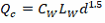
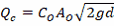

Flow capture efficiency for an inlet in a sag location depends on the size of the inlet’s opening and the depth of water that collects next to it at the street curb. At low flow depths the inlet acts as a weir with

while at higher depths it acts as an orifice with

where:
QC |
= |
captured flow (cfs) |
CW |
= |
weir coefficient (ft0.5/sec) |
CO |
= |
orifice coefficient |
g |
= |
acceleration of gravity (ft/sec2) |
LW |
= |
effective length of inlet (ft) |
AO |
= |
open area of inlet (ft2) |
d |
= |
effective depth of water seen by the inlet (ft) |
The values of CW and CO depend on the type of inlet (grate, curb opening, or slotted inlet).
Grates
For grate inlets the following values are used in the flow capture equations:
CW |
= |
3.0 |
CO |
= |
0.67 |
LW |
= |
L + 2W |
d |
= |
di + (W/2) SW |
where W is the grate's width, L its length, SW the gutter slope, and di the depth of water at the street's curb. It is assumed that the depth at which weir flow becomes orifice flow is the depth at which the two flows are the same. This results in weir flow for depths d below 1.79 AO / LW and orifice flow for depths above it.
Curb Openings
For curb opening inlets the following values are used in the flow capture equations:
CW |
= |
3.0 for uniform cross slope or L > 12 ft |
= |
2.3 otherwise |
|
CO |
= |
0.67 |
LW |
= |
L for uniform cross slope or L > 12 ft |
= |
L + 2W otherwise |
|
d |
= |
di - (h/2) sin(θ) |
where L is the length of the curb opening, h its height, W the width of a depressed gutter, θ the angle that the inlet's throat makes with the vertical (0 degrees for a vertical throat, 90 degrees for a horizontal throat), and di is the depth of water at the curb.
Weir flow occurs at effective depths below h while orifice flow occurs at depths greater than 1.4h. For depths in between these flow capture is linearly interpolated between the flow capture at these two depths.
Slotted Inlets
For slotted inlets the variables in the flow capture equations are:
CW |
= |
2.48 |
CO |
= |
0.8 |
LW |
= |
L |
d |
= |
di |
where L is the inlet length. Weir flow holds for d = 0.2 feet while orifice flow occurs for d = 0.4 feet. In between these depths flow capture is linearly interpolated between the flow capture at these two depths.